本指南面向首次使用 WhiteNeedle 的开发者，假设你对 VS Code / Cursor 有基本了解，但从未使用过 iOS 运行时调试工具。按照本指南一步步操作，你可以从零开始完成安装、连接、脚本编写和全部功能的使用。
在开始之前，请确认以下环境：
| 你需要有 | 最低版本 | 检查方式 |
|---|---|---|
| Mac 电脑 | macOS 12.0+ | 左上角 → 关于本机 |
| VS Code 或 Cursor | 1.85+ | 打开后看窗口标题栏版本号 |
| Node.js | 18.0+ | 终端执行 node --version |
| iPhone / iPad | iOS 15.0+ | 设置 → 通用 → 关于本机 |
| 同一 Wi-Fi 网络 | — | Mac 和 iPhone 连到同一个路由器 |
网络拓扑说明：
WhiteNeedle 的工作方式是：你的 Mac（运行 VS Code/Cursor）通过局域网连接 iPhone（运行集成了 WhiteNeedle 的 App）。二者必须在同一个网络中能互相访问。
┌─────────────────┐ Wi-Fi / USB ┌─────────────────┐
│ Mac (VS Code) │ ◄─────── TCP 27042 ────────► │ iPhone (App) │
│ 192.168.1.10 │ │ 192.168.1.100 │
└─────────────────┘ └─────────────────┘
WhiteNeedle.vsix 文件Cmd+Shift+P 打开命令面板Extensions: Install from VSIX... 并选择WhiteNeedle.vsix，点击安装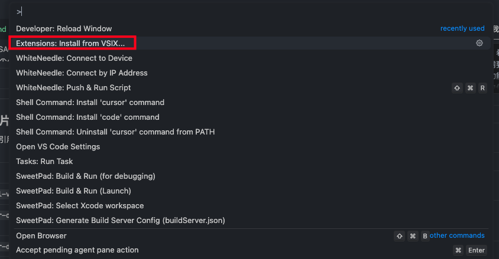
也可以用命令行安装：
# VS Code code --install-extension WhiteNeedle.vsix # Cursor cursor --install-extension WhiteNeedle.vsix
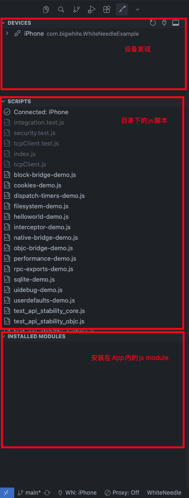
WhiteNeedle 的核心是一个动态 Framework（WhiteNeedle.framework），需要加载到你想调试的 iOS App 中。有两种方式：
这种方式不需要修改任何源代码，只需要你有一个 .ipa 文件。
你需要准备：
.ipa 文件（你的 App 的安装包）Apple Development: xxx@xxx.com (XXXXXX)）.mobileprovision，包含你的设备 UDID）操作步骤：
# 1. 进入 resign 工具目录
cd dist/skills/whiteneedle-resign
# 2. 执行重签名（替换为你自己的路径和证书信息）
./bin/resign.sh \
-i ~/Desktop/MyApp.ipa \
-c "Apple Development: you@example.com (ABCDEF)" \
-p ~/Desktop/MyProfile.mobileprovision
# 3. 签名成功后会输出新的 IPA 文件路径，类似：
# ✅ Output: ~/Desktop/MyApp_whiteneedle.ipa
# 4. 安装到 iPhone
brew install ios-deploy # 如果没安装过
ios-deploy --bundle ~/Desktop/MyApp_whiteneedle.ipa
Cursor 用户的更简单方式： 如果你使用 Cursor 且已安装
whiteneedle-resignSkill，只需要在 Cursor 对话中说"帮我重签名这个 IPA: ~/Desktop/MyApp.ipa"，AI 会自动引导你完成全部流程。
适合长期使用，需要修改 Xcode 工程。参见 dist/README.md 中的详细步骤。
如果 App 的 Info.plist 正确配置了 Bonjour（重签名方式会自动配置），设备会自动出现在列表中。
操作步骤：
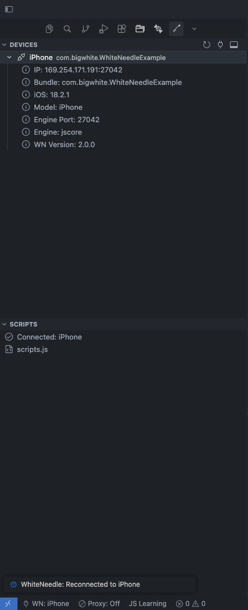
首次连接提示：
- iPhone 上可能弹出「是否允许 XXX 使用本地网络」的弹窗，请点击 允许
- Mac 上如果弹出防火墙或本地网络权限提示，也请 允许
如果设备没有自动出现，可以手动输入 IP 地址。
先查看 iPhone 的 IP 地址：
192.168.1.100然后在 VS Code 中连接：
192.168.1.100（只填 IP，端口默认 27042）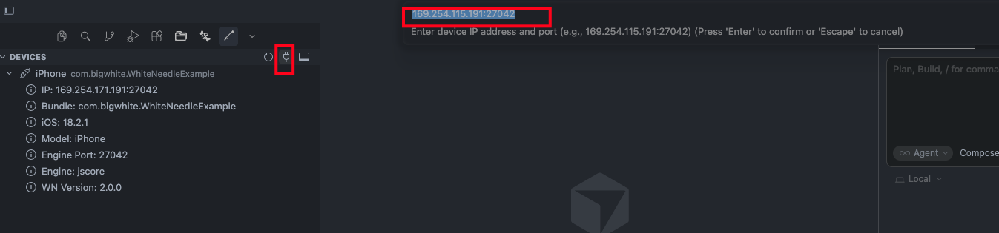
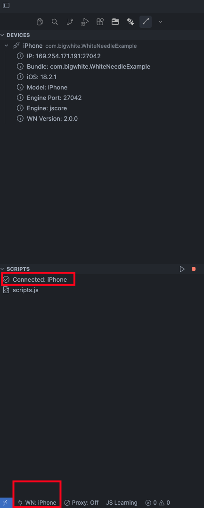
WhiteNeedle 允许你编写 JavaScript 脚本，在 iOS 设备上实时执行，用来 Hook 方法、读取数据、修改行为等。
Cmd+Shift+P 打开命令面板WhiteNeedle: New Script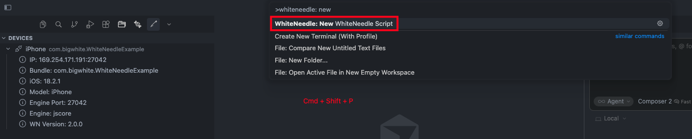
由于扩展内置了完整的类型声明，你在编写脚本时会获得：
ObjC. 会列出所有可用方法）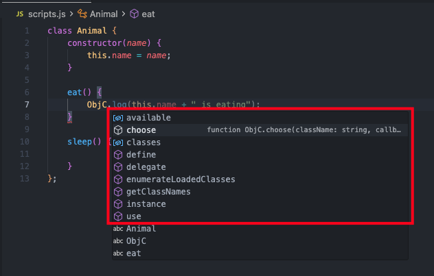
有三种方式推送脚本到 iPhone 执行：
| 方式 | 操作 |
|---|---|
| 快捷键 | 在脚本编辑器中按 Cmd+Shift+R |
| 标题栏按钮 | 点击编辑器标题栏的 ▶️ 按钮 |
| 命令面板 | Cmd+Shift+P → WhiteNeedle: Push & Run Script |
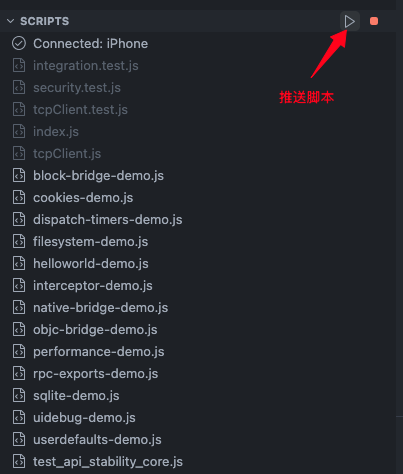
脚本中的 console.log() 输出会显示在 VS Code 的 Output 面板中：
Cmd+Shift+U）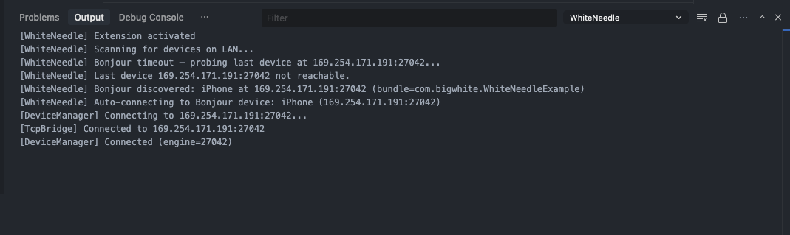
// 获取当前 App 的 Bundle ID
var app = ObjC.use('NSBundle').invoke('mainBundle').invoke('bundleIdentifier');
console.log('当前 App Bundle ID:', app.toString());
// 获取当前屏幕上的 ViewController
var rootVC = ObjC.use('UIApplication')
.invoke('sharedApplication')
.invoke('keyWindow')
.invoke('rootViewController');
console.log('根控制器:', rootVC.invoke('class').toString());
按 Cmd+Shift+R 推送，在 Output 面板查看结果。
保存自动重载： 默认情况下，每次你保存脚本（
Cmd+S），脚本会自动推送到设备重新执行。可以在设置中关闭：whiteneedle.autoReload → false。
WhiteNeedle 支持两种脚本执行模式，适用于不同的调试场景。你可以在 VS Code 设置中切换。
Cmd+,）whiteneedle.scriptModesingle（默认）或 project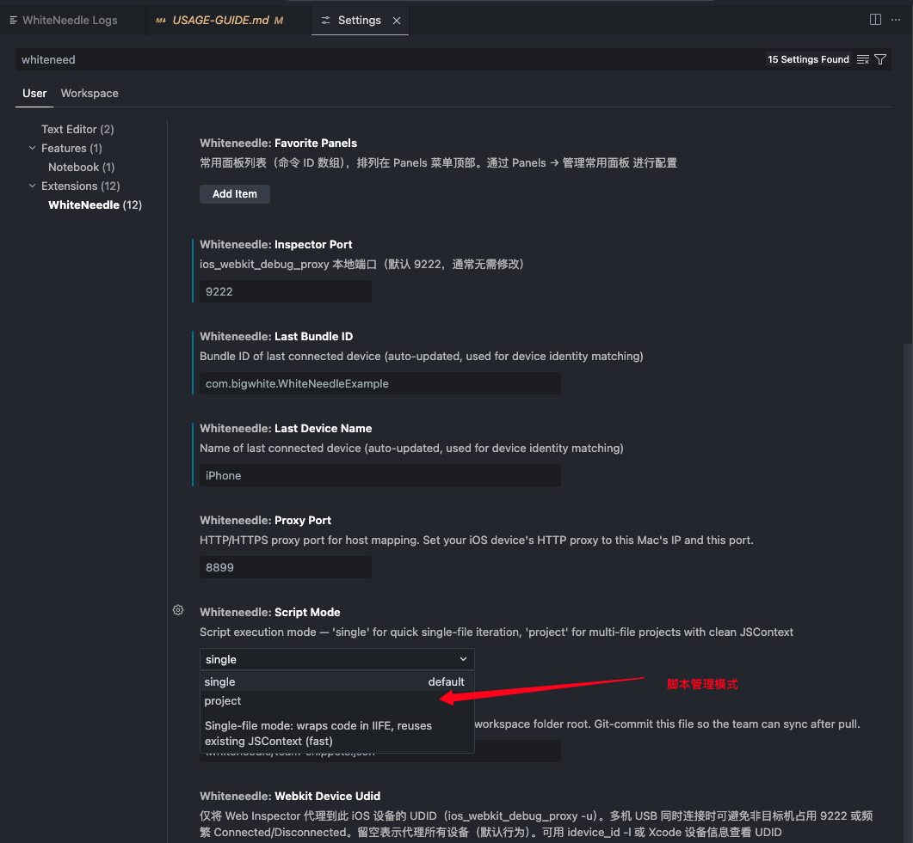
适合： 快速单文件调试、简单脚本迭代
| 特性 | 说明 |
|---|---|
| 执行方式 | 脚本自动包裹在 IIFE 中执行，复用已有 JSContext |
| 速度 | 快，保存即刻生效 |
| 上下文 | 复用当前 JSContext（已有变量/Hook 不受影响） |
| 依赖处理 | 不做依赖分析 |
这是默认模式，适合大多数日常调试场景。你写一个 .js 文件，保存后立刻在设备端执行，无需关心上下文重置。
适合： 多文件项目调试、需要干净环境的场景
| 特性 | 说明 |
|---|---|
| 执行方式 | 每次执行时创建全新的 JSContext |
| 速度 | 稍慢（需要重建 JSContext 和推送依赖） |
| 上下文 | 完全干净的环境（bootstrap.js 和所有 Bridge 会重新加载） |
| 依赖处理 | 自动分析 require('./...') 相对路径依赖并推送到设备 |
| Hook 恢复 | HookPanel 中设置的 Hook 会自动回放恢复 |
Project 模式的执行流程：
1. 分析主脚本中的 require('./...') 相对路径依赖
2. 重置 JSContext（清理 Hook、模块缓存、FPS 监控）
3. 重建 JSContext（加载 bootstrap.js、注册所有 Bridge）
4. 回放 Hook Manager 面板中设置的 Hook 代码
5. 将相对路径依赖推送到设备临时目录 (tmp/wn_run/)
6. 执行主脚本
require('./helper.js') 等方式引用了同目录下的其他 JS 文件| require 形式 | 处理方式 |
|---|---|
require('./math.js') |
✅ 自动推送到设备（相对路径，视为本地依赖） |
require('../utils/helper') |
✅ 自动推送到设备（相对路径） |
require('lodash') |
❌ 不推送，假定已预装在设备端 wn_modules 或 wn_installed_modules 中 |
注意： 裸模块名（如
lodash）需要提前安装到设备端。参见下一节「JS 模块管理」。
WhiteNeedle 支持将常用的 JS 模块预装到设备端，让你的脚本可以直接 require('模块名') 使用，无需每次从 Mac 推送。
模块安装到设备沙盒的 Documents/wn_installed_modules/ 目录中。WhiteNeedle 的模块加载器会按以下顺序搜索 require() 的模块：
1. Documents/wn_modules/ （内置模块）
2. Documents/wn_installed_modules/ （用户安装的模块）
3. Bundle/wn_modules/ （App 包内打包的模块）
4. tmp/wn_run/ （Project 模式运行时推送的临时依赖）
连接设备后，在侧边栏的 Installed Modules 面板中可以看到已安装的模块列表：
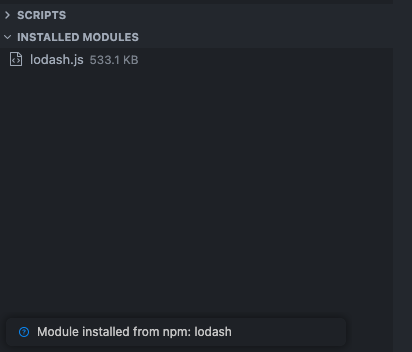
点击 Installed Modules 面板标题栏的 ➕ 按钮（或 Cmd+Shift+P → WhiteNeedle: Install JS Module），会弹出安装来源选择：
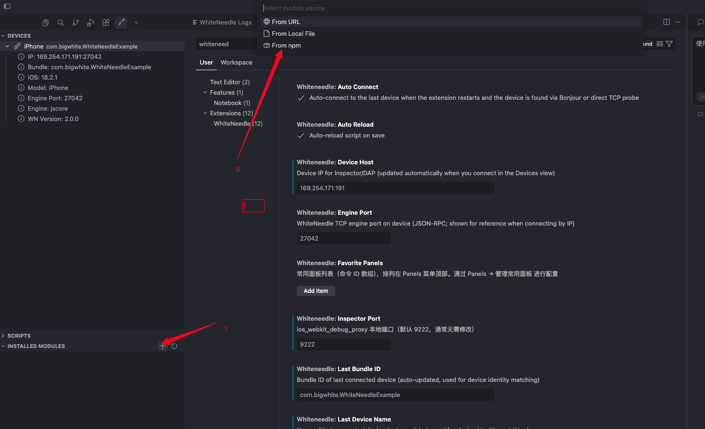
| 来源 | 说明 | 示例 |
|---|---|---|
| From URL | 直接从网络 URL 下载 JS 文件 | https://unpkg.com/lodash/lodash.min.js |
| From Local File | 选择 Mac 上的本地 JS 文件 | ~/libs/my-utils.js |
| From npm | 通过 unpkg.com CDN 下载 npm 包的 UMD 单文件 bundle | lodash、dayjs |
输入 npm 包名（如 lodash），扩展会自动从 https://unpkg.com/<包名> 下载文件。这种方式适合有 UMD/CJS 单文件 bundle 的包。
提示： 不是所有 npm 包都提供单文件 bundle。如果下载内容不正确，可以手动找到正确的 CDN 链接后用「From URL」方式安装。
在 Installed Modules 面板中，右键点击模块名称，选择 Uninstall Module。
安装后，直接在脚本中用 require() 引用模块名（不带路径前缀）：
var _ = require('lodash.min');
var dayjs = require('dayjs');
console.log(_.chunk([1, 2, 3, 4, 5], 2));
console.log(dayjs().format('YYYY-MM-DD'));
模块名 = 文件名（不含 .js 后缀）。例如安装了
lodash.min.js，则require('lodash.min')即可。
即使在 Project 模式下重置了 JSContext，wn_installed_modules 路径会被自动恢复到搜索路径中，已安装的模块依然可用。
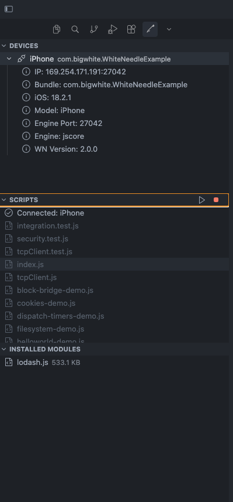
浏览 iOS App 中所有已加载的 Objective-C 类、方法和属性。
点击 Devices 面板标题栏的面板菜单图标（≡），选择 ObjC Runtime。
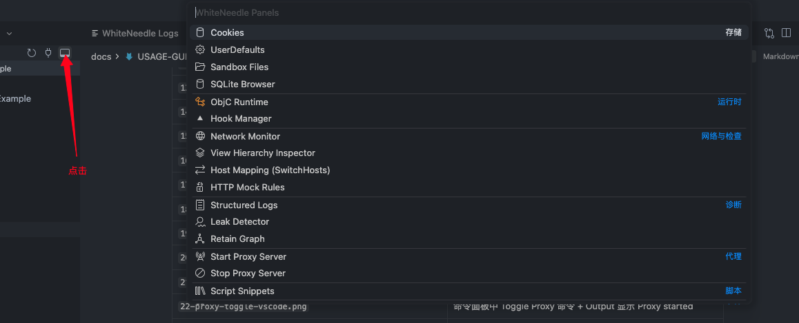
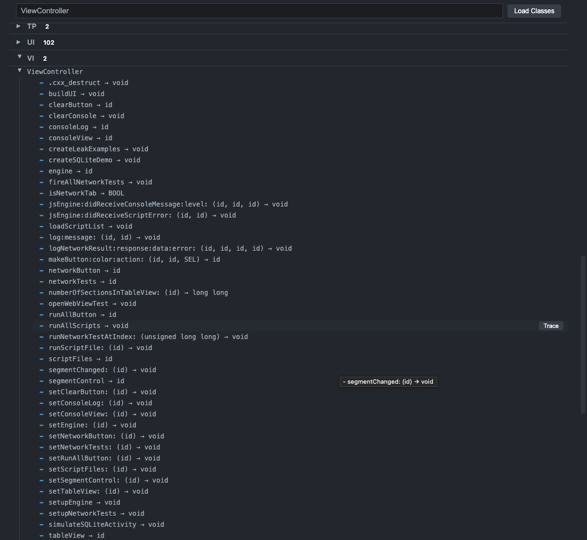
可视化管理当前所有活跃的方法 Hook。
面板菜单 → Hook Manager
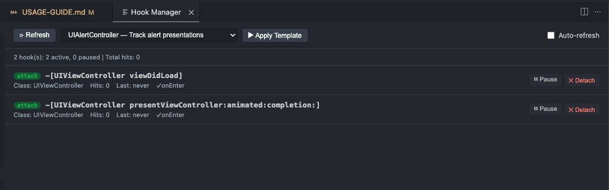
Interceptor.attach() 后在这里看到效果远程查看 iPhone 屏幕上当前的 UI 视图树。
面板菜单 → View Hierarchy Inspector
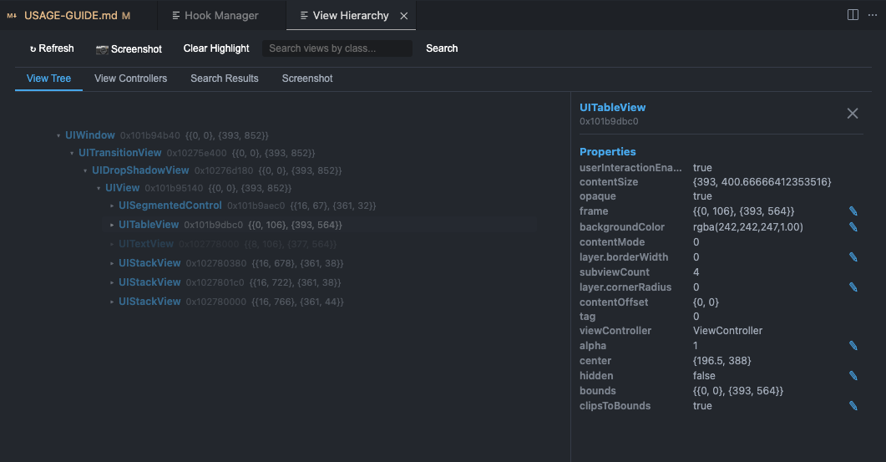
检测 App 中可能存在的 ViewController 内存泄漏。
面板菜单 → Leak Detector
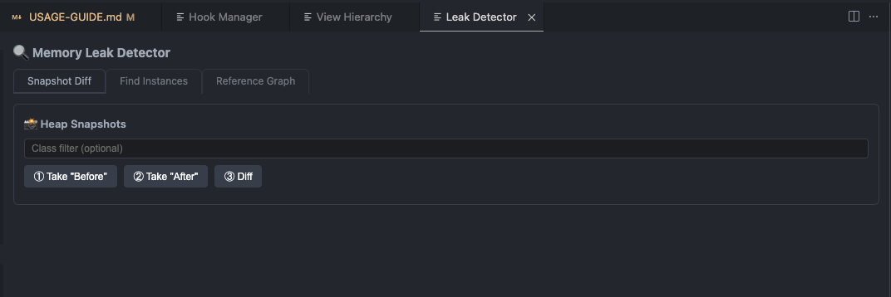
dealloc 未调用）以可视化图形展示对象之间的引用关系。
面板菜单 → Retain Graph
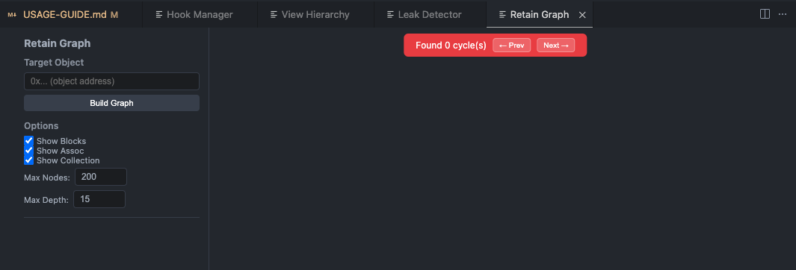
查看和编辑 App 的 HTTP Cookie 存储。
面板菜单 → Cookies
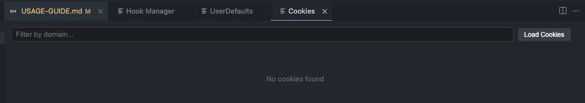
浏览和修改 App 的 NSUserDefaults 存储。
面板菜单 → UserDefaults
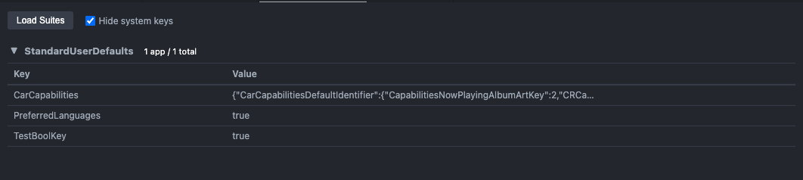
远程文件浏览器，查看 App 沙盒目录中的所有文件。
面板菜单 → Sandbox Files
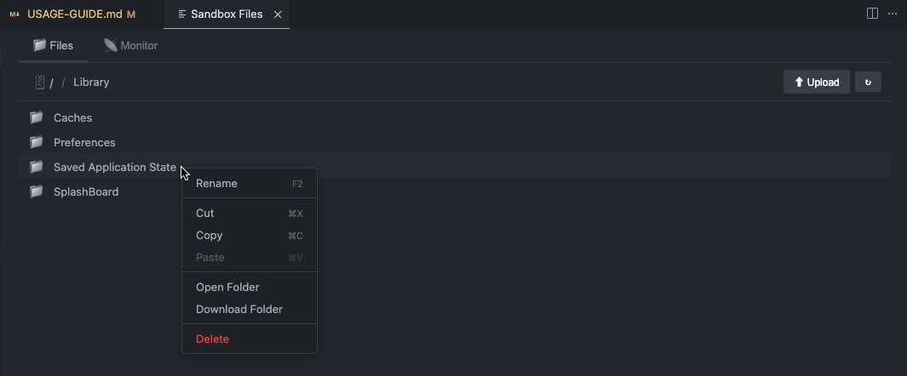
打开设备端的 SQLite 数据库文件，执行 SQL 查询。
面板菜单 → SQLite Browser
.db / .sqlite 文件打开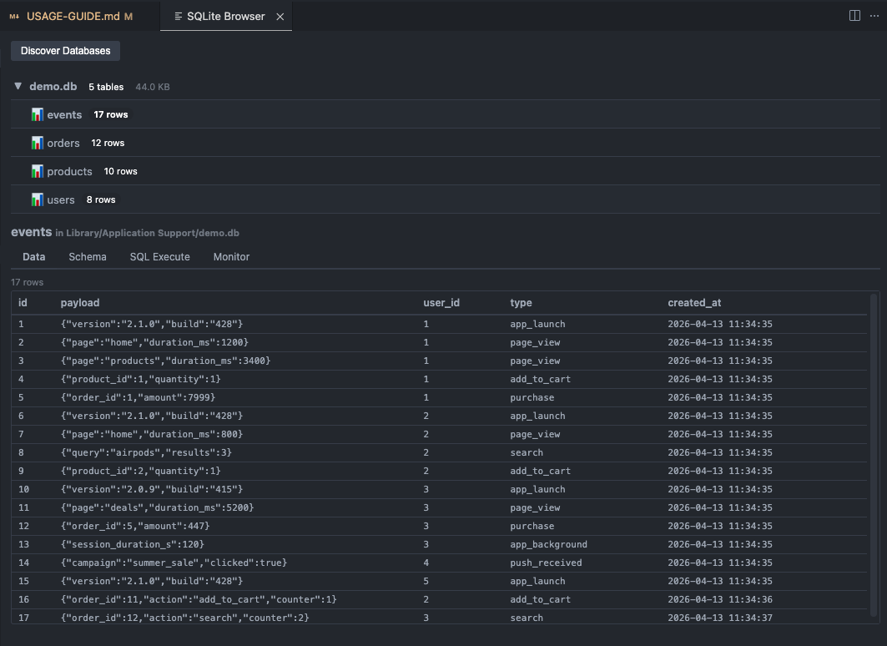
实时监控 App 发出的 HTTP/HTTPS 网络请求。
面板菜单 → Network Monitor
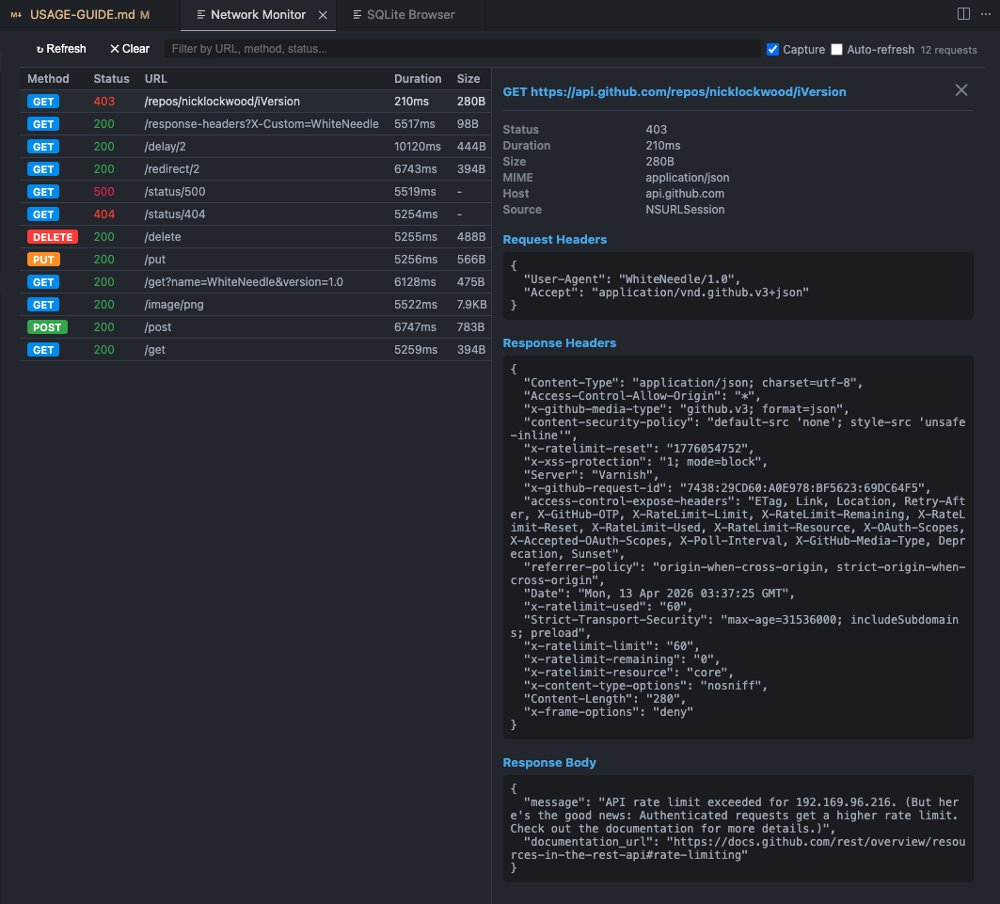
Network Monitor 通过 Hook NSURLSession 实现，连接设备后直接可用，不需要配置代理。
与 Proxy 的区别： Network Monitor 是无侵入式的监控（通过 Hook 实现），不需要设置代理。而 Host Mapping 和 Mock Rules 需要流量经过代理才能修改，因此需要额外配置（见第 19 节）。
拦截特定的网络请求，返回自定义的 Mock 响应。
面板菜单 → HTTP Mock Rules
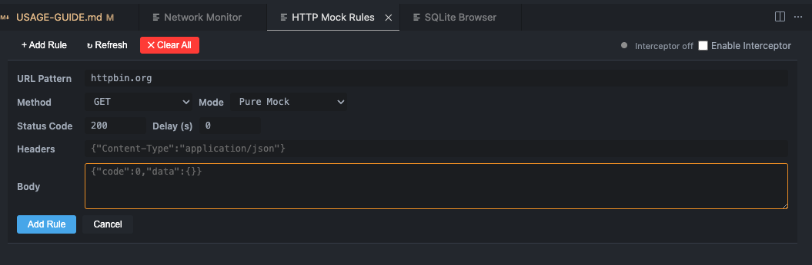
Mock Rules 需要 Proxy 代理配合使用。请先完成第 19 节的代理配置，然后再使用 Mock Rules。
⚠️ 这是需要 Mac 和 iPhone 两端配合操作的功能。请严格按照以下步骤执行。
Host Mapping 允许你将某个域名映射到不同的 IP（类似电脑上的 SwitchHosts 工具）。它需要通过内置的 Proxy 代理服务器实现。
iPhone App 发出请求
│
▼ (通过 Wi-Fi 代理)
┌──────────────────────────┐
│ Mac: WhiteNeedle Proxy │ ← Host Mapping 规则在这里生效
│ (端口 8899) │ ← Mock Rules 也在这里生效
└──────────────────────────┘
│
▼ (转发到映射后的 IP)
目标服务器
192.168.1.10Cmd+Shift+P，输入 WhiteNeedle: Toggle Proxy ServerProxy server started on port 8899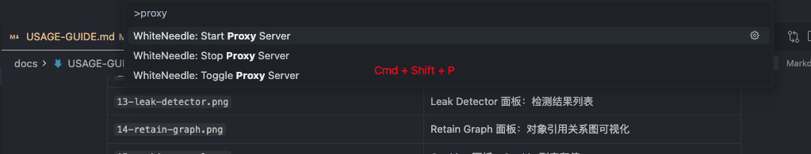
端口说明： 默认代理端口是
8899，可以在设置中修改：whiteneedle.proxyPort
这一步是在 iPhone 上操作，不是在 Mac 上。
192.168.1.10（你的 Mac IP，第一步查到的）8899（与 VS Code 中启动的代理端口一致）api.example.com → 192.168.1.50（将线上 API 指向测试服务器）cdn.example.com → 192.168.1.60（将 CDN 指向本地服务器）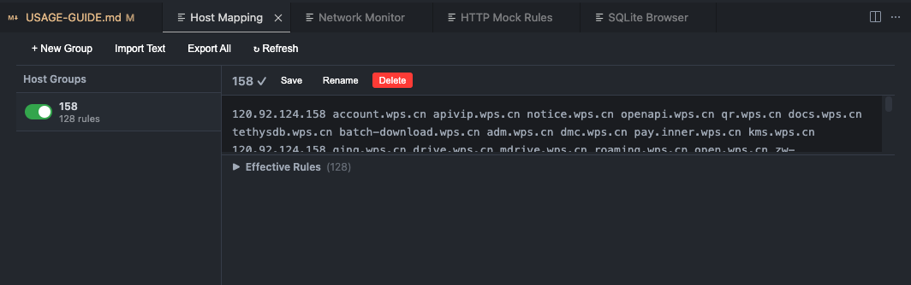
api.example.com 的请求会被代理转发到 192.168.1.50⚠️ 重要：用完后务必恢复 iPhone 代理设置，否则 iPhone 将无法正常上网！
Cmd+Shift+P → WhiteNeedle: Toggle Proxy Server 停止代理内置的常用脚本代码片段库，帮助你快速编写常见操作。
面板菜单 → Script Snippets
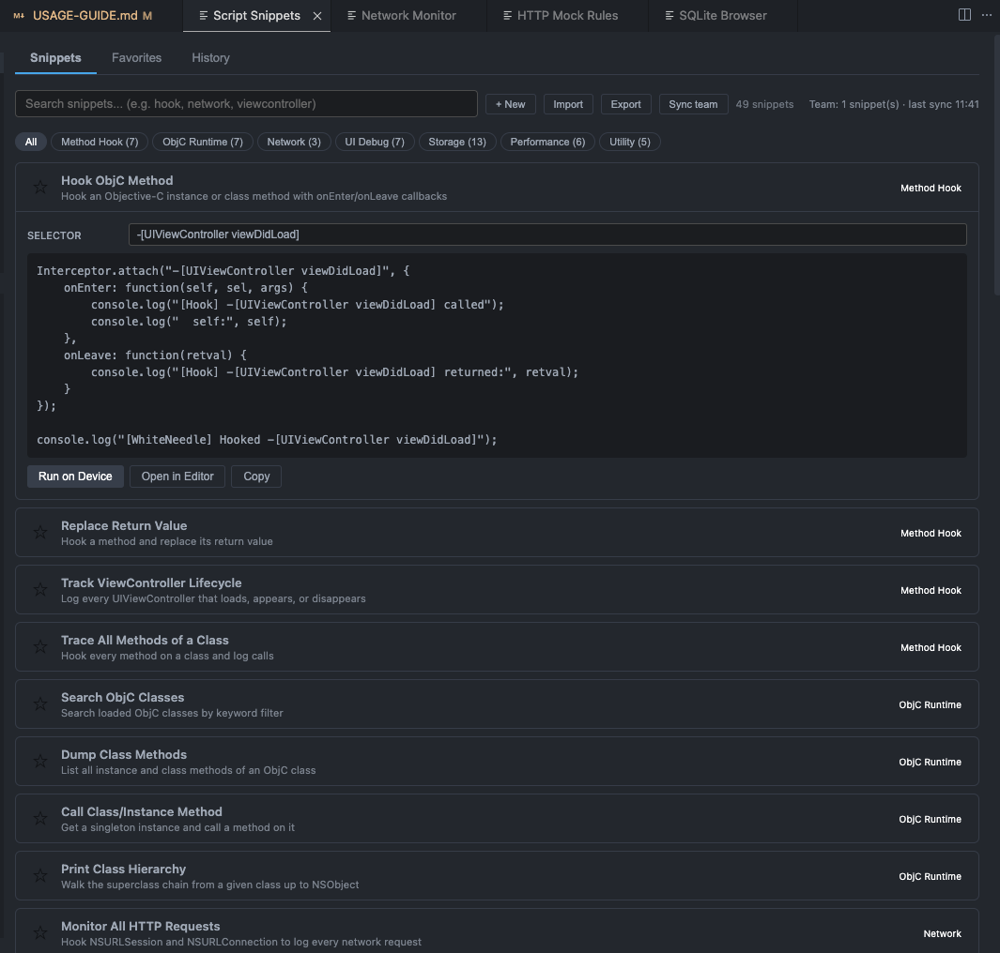
团队成员可以共享自定义脚本片段，通过 Git 仓库同步。
.whiteneedle/team-snippets.json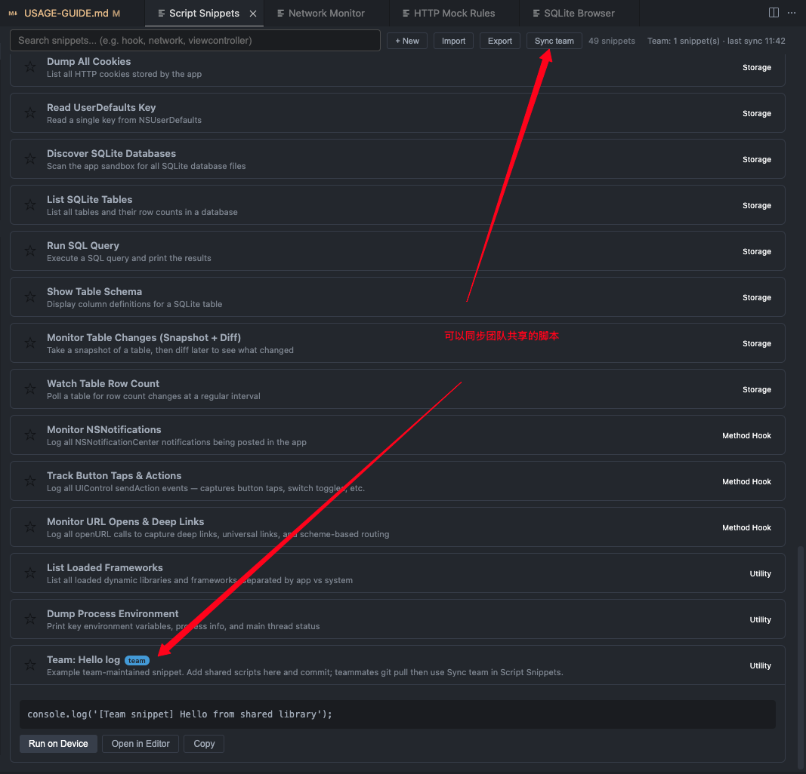
[
{
"name": "Hook 登录接口",
"category": "Network",
"code": "Interceptor.attach('-[LoginService login:]', {\n onEnter: function(self) {\n console.log('Login called');\n }\n});"
}
]
团队片段文件的路径可以在设置中修改：
whiteneedle.snippets.teamFile — 默认值 .whiteneedle/team-snippets.json，相对于工作区根目录。
扩展内置了完整的 WhiteNeedle JS API 文档，离线可用。
面板菜单 → API Documentation
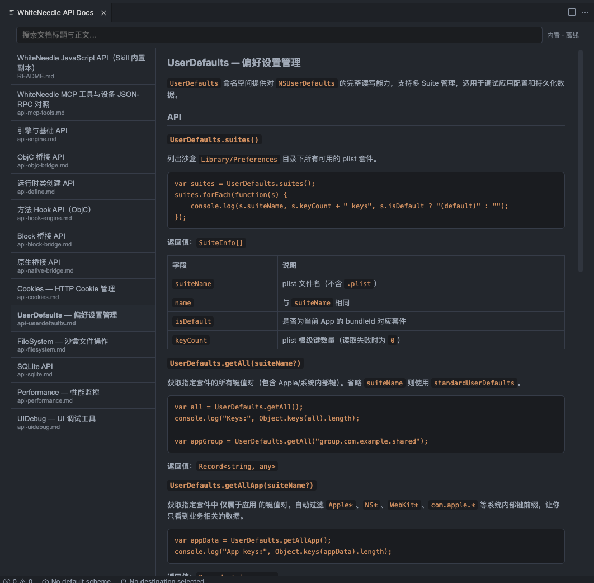
格式化的设备端日志查看器，比 Output 面板提供更好的日志浏览体验。
面板菜单 → Structured Logs
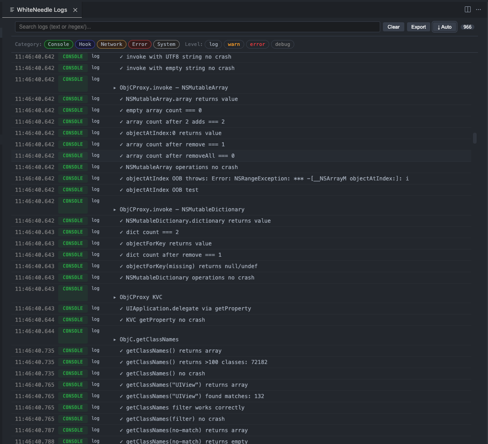
| Output 面板 | Structured Logs | |
|---|---|---|
| 日志格式 | 纯文本 | 结构化表格 |
| 过滤 | 无 | 支持等级和关键字过滤 |
| 适合 | 快速查看 | 大量日志时的浏览和分析 |
WhiteNeedle 支持通过 VS Code 的标准 Debug 功能进行 JavaScript 断点调试。
这是一个进阶功能，依赖
ios_webkit_debug_proxy工具。
# 安装 ios_webkit_debug_proxy
brew install ios-webkit-debug-proxy
# 安装 libimobiledevice（USB 通信支持）
brew install libimobiledevice
.vscode/launch.json{
"version": "0.2.0",
"configurations": [
{
"type": "whiteneedle",
"request": "launch",
"name": "WhiteNeedle: Debug",
"host": "127.0.0.1",
"inspectorPort": 9222
}
]
}
Push & Run 推送脚本到设备F5 启动调试或点击 Debug 面板的绿色三角注意： DAP 调试需要 USB 连接，而普通的脚本推送可以通过 Wi-Fi 完成。这是两个独立的通信通道。
WhiteNeedle 提供了一个 MCP（Model Context Protocol）Server，让 Cursor、Claude Code 等 AI Agent 能够直接与 iOS 设备交互——浏览类、执行脚本、管理 Hook、监控网络、操作视图等——无需手动操作 VS Code 面板。
┌─────────────────┐ stdio ┌─────────────────┐ TCP 27042 ┌──────────────┐
│ Cursor / Claude │ ◄────────► │ MCP Server │ ◄───────────► │ iPhone App │
│ (AI Agent) │ │ (Node.js) │ │ (WhiteNeedle│
└─────────────────┘ └─────────────────┘ │ .framework) │
└──────────────┘
AI Agent 通过 MCP 协议调用工具（如 evaluate、list_classes），MCP Server 将请求转换为 JSON-RPC 发送到设备端 WNRemoteServer，再将结果返回给 Agent。
node --version # 需要 18.0+
cd mcp-server
npm install
npm run build
构建产物为 mcp-server/dist/index.js。
在项目根目录创建 .cursor/mcp.json（或在全局 ~/.cursor/mcp.json 中配置）：
{
"mcpServers": {
"whiteneedle": {
"command": "node",
"args": ["/path/to/mcp-server/dist/index.js"],
"env": {
"WN_HOST": "192.168.1.100",
"WN_PORT": "27042"
}
}
}
}
环境变量说明：
WN_HOST：iPhone 的 IP 地址。如果不设置，默认127.0.0.1（适用于 USB 端口转发场景）WN_PORT：WhiteNeedle 端口，默认27042你也可以不设置环境变量，让 Agent 使用
connect工具动态连接到指定设备。
在 Cursor 的 AI 对话中输入类似的请求：
连接到我的 iPhone（192.168.1.100），列出所有包含 ViewController 的类
Agent 会自动调用 connect → list_classes 工具完成操作。
MCP Server 提供了 38 个工具，覆盖 WhiteNeedle 的全部核心能力：
| 分类 | 工具 | 说明 |
|---|---|---|
| 连接 | connect / disconnect |
连接/断开 iOS 设备 |
| 脚本 | evaluate / load_script / unload_script / list_scripts |
执行 JS、管理命名脚本 |
| ObjC 探索 | list_classes / get_methods / list_modules |
浏览运行时类、方法、动态库 |
| Hook | list_hooks / list_hooks_detailed / pause_hook / resume_hook |
查看和控制活跃的 Hook |
| 高级探索 | trace_method / rpc_call / inspect_object / heap_search |
方法追踪、堆搜索、对象检查 |
| 网络 | list_network_requests / get_network_request / clear_network_requests / set_network_capture |
HTTP 请求监控 |
| UI 调试 | get_view_hierarchy / get_view_controllers / get_vc_detail / get_view_detail / set_view_property / highlight_view / clear_highlight / search_views / search_views_by_text / get_screenshot |
视图层级、属性修改、按类名/文本搜索视图、截图 |
| HTTP Mock | list_mock_rules / add_mock_rule / update_mock_rule / remove_mock_rule / remove_all_mock_rules / enable_mock_interceptor / disable_mock_interceptor / get_mock_interceptor_status |
接口模拟 |
| Context | reset_context / list_installed_modules |
重置 JS 环境、查看已安装模块 |
| 沙盒文件 | write_file / mkdir / remove_dir |
读写设备沙盒文件 |
完整的工具参数和 RPC 对照表 见
docs/api-mcp-tools.md。
| 场景 | Agent 会调用的工具 |
|---|---|
| 「帮我看看当前页面是哪个 ViewController」 | get_view_controllers → get_vc_detail |
| 「Hook 一下登录接口，打印请求参数」 | list_classes → get_methods → evaluate（注入 Hook 代码） |
| 「分析网络请求，看哪个接口最慢」 | list_network_requests → get_network_request |
| 「Mock 掉支付接口，返回成功」 | enable_mock_interceptor → add_mock_rule |
| 「重置环境，然后运行测试脚本」 | reset_context → load_script |
| 「找到显示'登录'的按钮，改成'Sign In'」 | search_views_by_text（搜索"登录"）→ set_view_property（修改 text） |
MCP Server 和 VS Code 扩展共享同一个设备端引擎（WNRemoteServer），可以同时使用：
| 检查项 | 解决方式 |
|---|---|
| Mac 和 iPhone 不在同一 Wi-Fi | 确认连的是同一个路由器 |
| App 未运行 | 在 iPhone 上启动集成了 WhiteNeedle 的 App |
| Info.plist 缺少 Bonjour 配置 | 使用重签名方式会自动注入；CocoaPods 需手动添加 |
| iPhone 未授权本地网络 | 设置 → 隐私与安全性 → 本地网络 → 找到 App 并开启 |
| Mac 防火墙阻止 | 系统设置 → 防火墙 → 选项 → 允许传入连接 |
| 以上都确认了仍然不行 | 使用 Connect by IP 手动连接 |
| 检查项 | 解决方式 |
|---|---|
| 未连接设备 | 先在 Devices 面板连接设备 |
| 脚本有语法错误 | 查看 Output → WhiteNeedle 面板中的报错信息 |
| App 已切到后台 | 将 App 切到前台，iOS 后台可能暂停了 JSCore |
| 检查项 | 解决方式 |
|---|---|
| Proxy 未启动 | Cmd+Shift+P → Toggle Proxy Server，查看 Output 确认 started on port 8899 |
| iPhone 代理未配置 | 设置 → Wi-Fi → ⓘ → HTTP 代理 → 手动 → 填写 Mac IP 和端口 |
| iPhone 代理填错 IP | 必须填 Mac 的 IP，不是 iPhone 的 IP |
| iPhone 代理填错端口 | 端口必须与 VS Code 中 Proxy 启动的端口一致（默认 8899） |
| 配好后完全无法上网 | Mac IP 或端口不对，或 Mac 端 Proxy 没有启动 |
| 检查项 | 解决方式 |
|---|---|
| 刚安装扩展 | 重新加载窗口：Cmd+Shift+P → Reload Window |
| 非 .js 文件 | 类型补全只对 JavaScript 文件生效 |
| jsconfig.json 异常 | 删除工作区根目录的 jsconfig.json，重新加载窗口让扩展重新创建 |
| 检查项 | 解决方式 |
|---|---|
| 未用 USB 连接 | DAP 调试需要 USB 线连接 Mac 和 iPhone |
| ios_webkit_debug_proxy 未安装 | brew install ios-webkit-debug-proxy |
| Web 检查器未开启 | iPhone 设置 → Safari → 高级 → Web 检查器 → 开启 |
| 端口被占用 | 确认 9222 端口未被其他程序占用：lsof -i :9222 |
| 检查项 | 解决方式 |
|---|---|
| Project 模式切换后没有效果 | 确认设置中 whiteneedle.scriptMode 已改为 project，然后点击 Push & Run 执行 |
| 相对路径依赖推送失败 | 确认依赖文件存在于 Mac 端，且路径拼写正确（require('./math') 会尝试找 math.js） |
require('xxx') 报模块找不到 |
裸模块名需要预先安装到设备端（侧边栏 Installed Modules 面板 → ➕ 安装），或放在 wn_modules 目录中 |
| 安装模块后 require 仍然找不到 | 模块名 = 文件名（不含 .js），确认文件名匹配；如果是 Context 刚重置，搜索路径会自动恢复 |
| npm 安装下载的文件内容不对 | 该包可能没有 UMD 单文件 bundle，手动从 CDN 找到正确 URL 后用「From URL」安装 |
| Hook 在 Project 模式切换后丢失 | Hook Manager 面板中设置的 Hook 会自动回放恢复；脚本中手动写的 Hook 需要包含在主脚本中 |
以下是本指南引用的所有截图。请按照文件名到对应功能页面截取真实截图，替换 docs/guide-images/ 目录中的占位文件：
| 文件名 | 截图内容说明 |
|---|---|
01-install-vsix.png |
VS Code 命令面板中执行 Install from VSIX 的画面 |
02-sidebar-overview.png |
安装扩展后左侧 Activity Bar 和侧边栏 Devices / Scripts / Installed Modules 面板的整体截图 |
03-bonjour-devices.png |
Devices 面板中出现了自动发现的设备列表 |
04-connect-by-ip.png |
点击 Connect by IP 后弹出的输入框 |
05-device-connected-statusbar.png |
连接成功后底部状态栏的连接状态显示 |
06-new-script-command.png |
命令面板中输入 New Script 的画面 |
07-script-autocomplete.png |
编辑器中输入 ObjC. 后弹出的自动补全列表 |
08-push-run-button.png |
编辑器标题栏的 ▶️ Play 按钮和 ⏹ Stop 按钮 |
09-output-log.png |
Output 面板选中 WhiteNeedle 后显示的脚本执行日志 |
10-objc-runtime.png |
ObjC Runtime 面板：类列表、方法列表展开 |
11-hook-manager.png |
Hook Manager 面板：活跃的 Hook 列表 |
12-view-hierarchy.png |
View Hierarchy 面板：UI 树形结构 |
13-leak-detector.png |
Leak Detector 面板：检测结果列表 |
14-retain-graph.png |
Retain Graph 面板：对象引用关系图可视化 |
15-cookies-panel.png |
Cookies 面板：Cookie 列表和值 |
16-userdefaults-panel.png |
UserDefaults 面板：键值对列表 |
17-sandbox-files.png |
Sandbox Files 面板：沙盒目录树 |
18-sqlite-browser.png |
SQLite Browser 面板：表列表 + SQL 查询结果 |
19-network-monitor.png |
Network Monitor 面板：请求列表（URL、状态码、耗时） |
20-mock-rules.png |
Mock Rules 面板：规则列表和编辑界面 |
21-host-mapping.png |
Host Mapping 面板：域名映射规则列表 |
22-proxy-toggle-vscode.png |
命令面板中 Toggle Proxy 命令 + Output 显示 Proxy started |
23-iphone-wifi-proxy-settings.png |
⏳ 待补充 — iPhone 设置 → Wi-Fi → HTTP 代理 → 手动配置的截图 |
24-proxy-workflow-diagram.png |
⏳ 待补充 — 代理工作流程示意图（可用绘图工具制作） |
25-snippet-library.png |
Script Snippets 面板：分类和代码片段列表 |
26-team-snippets-sync.png |
Sync Team Snippets 命令执行或面板提示 |
27-api-docs-panel.png |
API Documentation 面板：模块列表和 API 详情 |
28-structured-logs.png |
Structured Logs 面板：日志等级过滤和列表 |
29-dap-launch-json.png |
⏳ 待补充 — .vscode/launch.json 中 WhiteNeedle Debug 配置 |
30-dap-breakpoint-hit.png |
⏳ 待补充 — 断点命中时的调试界面（变量面板、调用栈、Debug Console） |
31-panels-menu.png |
Devices 面板标题栏展开的面板菜单（Panels 子菜单） |
32-script-mode-setting.png |
VS Code 设置中 whiteneedle.scriptMode 的下拉选择（single / project） |
33-module-tree-view.png |
侧边栏 Installed Modules 面板中已安装模块列表 |
34-install-module-dialog.png |
Install JS Module 命令弹出的安装来源 Quick Pick（URL / File / npm） |
35-sidebar-with-modules.png |
更新后的侧边栏全景：Devices + Scripts + Installed Modules 三个面板 |